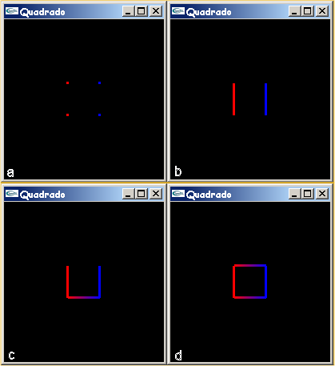

Com apenas algumas primitivas simples, tais como pontos,
linhas e polígonos, é possível criar estruturas complexas. Em outras palavras,
objetos e cenas criadas com OpenGL consistem em simples primitivas gráficas que podem ser
combinadas de várias
maneiras [Wright 2000]. Portanto, OpenGL fornece ferramentas para desenhar pontos, linhas e
polígonos, que são formados por um
ou mais vértices. Neste caso, é necessário passar uma lista de vértices, o que pode ser
feito entre duas chamadas de funções OpenGL:
glBegin()
glEnd()
O argumento passado para glBegin() determina qual objeto será desenhado. No exemplo
fornecido por [Hill 2000], para desenhar três pontos pretos foi usada a seguinte seqüência
de comandos:
glBegin(GL_POINTS); glColor3f(0.0f, 0.0f, 0.0f); glVertex2i(100, 50); glVertex2i(100, 130); glVertex2i(150, 130); glEnd();
Para desenhar outras primitivas, basta trocar
GL_POINTS, que exibe um ponto para cada chamada ao comando glVertex, por:
GL_LINES: exibe uma linha a cada dois comandos glVertex;
GL_LINE_STRIP: exibe uma seqüência de linhas conectando os pontos definidos por glVertex;
GL_LINE_LOOP: exibe uma seqüência de linhas conectando os pontos definidos por glVertex e ao final liga o primeiro como último ponto;
GL_POLYGON: exibe um polígono convexo preenchido, definido por uma seqüência de chamadas a glVertex;
GL_TRIANGLES: exibe um triângulo preenchido a cada três pontos definidos por glVertex;
GL_TRIANGLE_STRIP: exibe uma seqüência de triângulos baseados no trio de vértices v0, v1, v2, depois, v2, v1, v3, depois, v2, v3, v4 e assim por diante;
GL_TRIANGLE_FAN: exibe uma seqüência de triângulos conectados baseados no trio de vértices v0, v1, v2, depois, v0, v2, v3, depois, v0, v3, v4 e assim por diante;
GL_QUADS: exibe um quadrado preenchido conectando cada quatro pontos definidos por glVertex;
GL_QUAD_STRIP: exibe uma seqüência de quadriláteros conectados a cada quatro vértices; primeiro v0, v1, v3, v2, depois, v2, v3, v5, v4, depois, v4, v5, v7, v6, e assim por diante [Hill 2000, Pinho 2000].
A função glVertex2i pertence à biblioteca GL e
possui dois argumentos inteiros. De maneira análoga, conforme explicado no capítulo 4,
também é possível passar valores de ponto flutuante no lugar de inteiros,
e três coordenadas (x,y,z) no lugar de duas usando, por exemplo, as seguintes chamadas às
funções OpenGL:
glVertex2d(100.0, 50.0);
glVertex3f(50.0, 50.0, 50.0);
Além disso, para cada vértice é possível definir uma cor diferente. Neste caso, no desenho
final é feita uma "interpolação" das cores,
como mostra o exemplo da figura 8.1.
Para ilustrar a diferença na utilização de algumas primitivas gráficas o código apresentado no capítulo 8 foi alterado da seguinte maneira: inicialmente, os parâmetros passados para a função glutInitWindowSize foram alterados para (200,200), para diminuir o tamanho da janela GLUT; depois, antes da função glBegin(GL_QUADS) foram chamadas as funções glPointSize(3) e glLineWidth(3); finalmente, GL_QUADS, foi substituído por GL_POINTS, GL_LINES, GL_LINE_STRIP e GL_LINE_LOOP, gerando as imagens apresentadas na figura 9.1.

Figura 9.1 - Imagens geradas com a utilização de (a) GL_POINTS, (b) GL_LINES, (c) GL_LINE_STRIP e (d) GL_LINE_LOOP